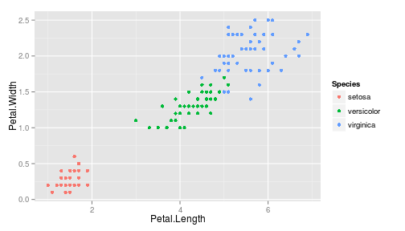
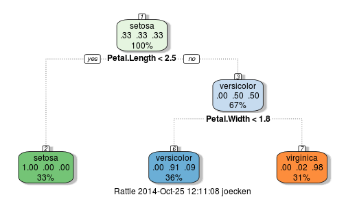

Kyle Joecken
Developing Data Products - Coursera
Enter just a few simple measurements.
Let advanced algorithm detect faint data subtleties and return your species.

Behind the scenes, a complex code emits a powerful prediction algorithm.
fitMod <- train(Species ~ ., data = iris, method = "rpart")
fancyRpartPlot(fitMod$finalModel)

Red herrings: Sepal length and width entered but not used; this gives the client an inflated sense of accuracy!
Sliders: Easy to implement, slick, professional!
Built in documentation: Even new gardeners and new computer users will find it simple!
Give the app a test run here!